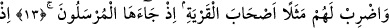
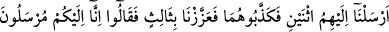
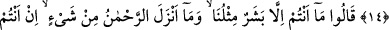
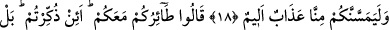
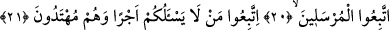
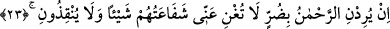
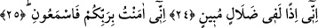

BİZ GERÇEKTEN
SİZE GÖNDERİLMİŞ
ELÇİLERİZ
13. Onlara, şu şehir halkını misal getir: Hani onlara elçiler gelmişti.
14. İşte o zaman biz, onlara iki elçi göndermiştik. Onları yalanladılar. Bunun
üzerine üçüncü bir elçi gönderdik. Onlar: Biz size gönderilmiş Allah elçileriyiz!
dediler.
15. Elçilere dediler ki: Siz de ancak bizim gibi birer insansınız. Rahmân, herhangi
bir şey indirmedi. Siz ancak yalan söylüyorsunuz.
16. (Elçiler) dediler ki: Rabbimiz biliyor; biz gerçekten size gönderilmiş elçileriz.
17. “Bizim vazifemiz, açık bir şekilde Allah’ın buyruklarını size tebliğ etmekten
başka bir şey değildir” dediler.
18. (Bunun üzerine onlar:) Doğrusu siz bize uğursuz geldiniz. Eğer bu işten
vazgeçmezseniz, andolsun sizi taşlarız. Ve bizden size mutlaka fena bir kötülük
dokunur, dediler.
19. Elçiler şöyle cevap verdi: Sizin uğursuzluğunuz sizinle beraberdir. Size
nasihat ediliyorsa bu uğursuzluk mudur? Bilakis, siz aşırı giden bir milletsiniz.
20. Derken şehrin öbür ucundan bir adam koşarak geldi. “Ey kavmim! Bu elçilere
uyunuz!” dedi.